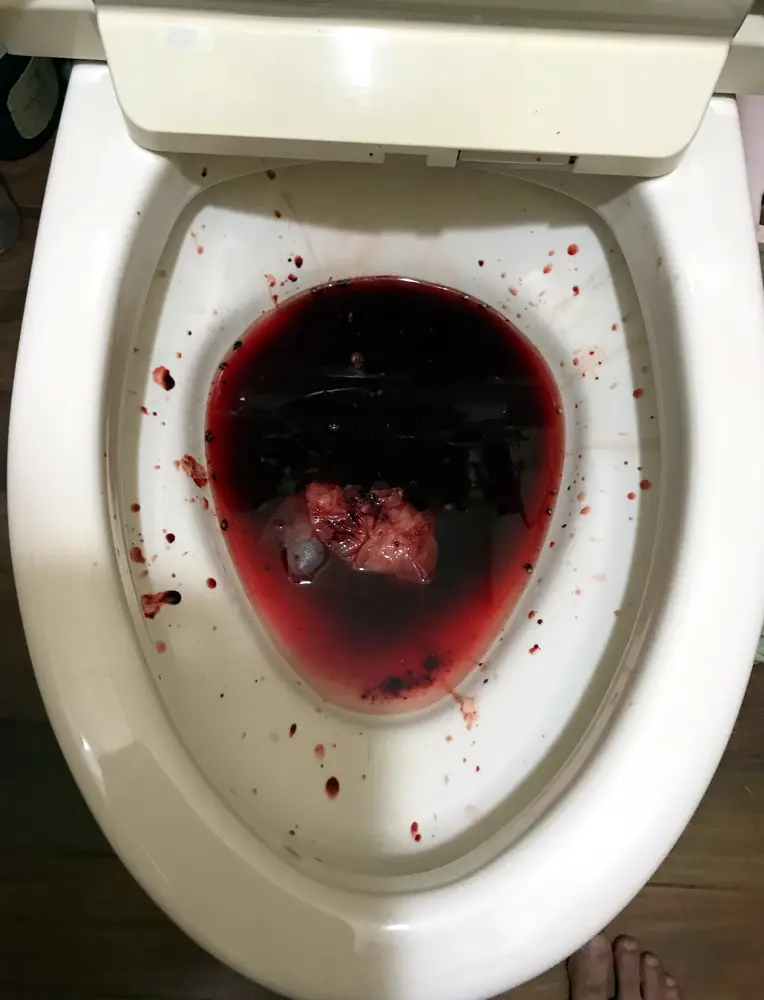
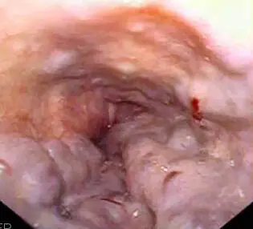
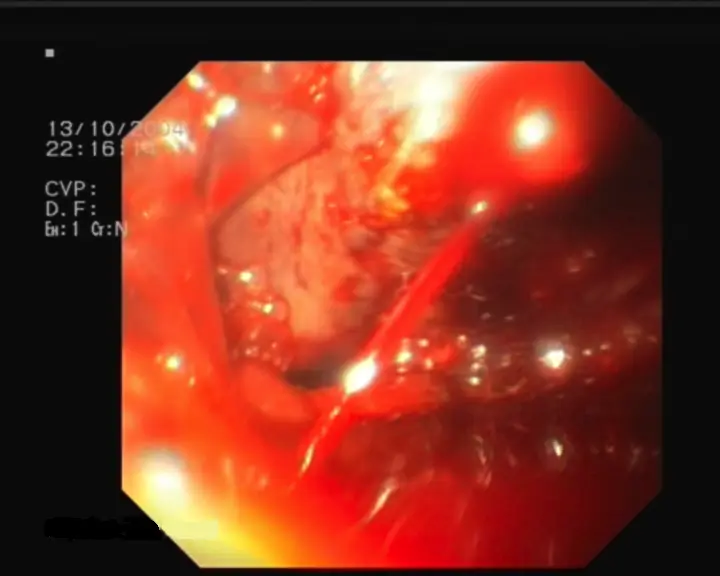
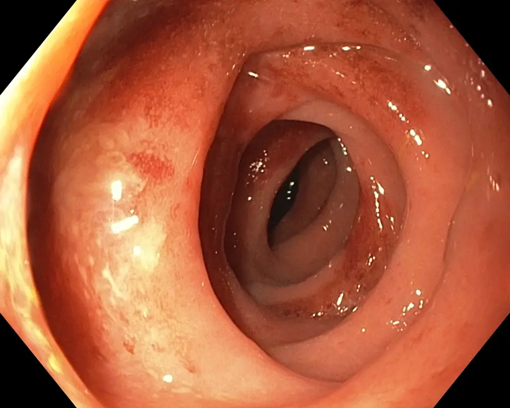

Hémorragie digestive aiguë
Ce cours suit la pratique suisse devant une rectorragie, un méléna ou une hématochézie.
Dix diagnostics, dans l’ordre de fréquence retenu
- DX.1 — rectorragie Ne rang, parce que le sang rouge avec caillots oriente d’ordinaire vers le bas, tandis qu’un choc fait remonter la source[1].
- DX.2 — méléna Ne rang, parce que le noir n’appartient pas au seul haut lorsque le transit laisse l’hématine naître dans le côlon[3].
- DX.3 — hématochézie 🚩 E2 hémorragie haute Ne rang, parce que une évacuation rouge avec choc peut venir d’amont et l’instabilité est alors constante[1].
- DX.4 — diverticule Ne rang, parce que l’écoulement reste souvent arrêté de lui-même et le côlon droit en porte une large part[2].
- DX.5 — hémorroïde Ne rang, parce que les stades internes un et deux se ferment par infrarouge ou par ligature[2].
- DX.6 — angiodysplasie Ne rang, parce que le vaisseau colique se ferme par électrocoagulation à l’argon quand la coloscopie l’atteint[2].
- DX.7 — colite Ne rang, parce que le traitement suit la cause et passe en général par des médicaments[2].
- DX.8 — grêle Ne rang, parce que une atteinte isolée hors de portée de l’endoscope est surtout opérée[2].
- DX.9 — varice 🚩 E1 choc hémorragique Ne rang, parce que l’anamnèse cherche le foie et un vasoactif est discuté avant la fibroscopie[4].
- DX.10 — source obscure Ne rang, parce que la source reste absente chez environ 5 % des patients après les deux premiers examens[2].
1. Définition et sémantique
Les critères de siège, publiés en 2010 par la Revue médicale suisse, placent le saignement haut au-dessus du ligament de Treitz et le saignement bas au-dessous[1].
Ainsi l’hématémèse et le méléna parlent d’abord pour le haut, tandis que le sang rouge parle d’ordinaire pour le bas[1].
Un vomissement en marc de café traduit un saignement encore limité, parce que le sang a eu le temps de noircir dans l’estomac[1].
La rectorragie se reconnaît au sang rouge mêlé de caillots, de ce fait on ne la confond pas avec un méléna noir[1].
L’hématochézie est surtout vue lorsqu’une maladie inflammatoire ou une colite aiguë laisse suinter la muqueuse[1].
Pourtant une hémorragie haute massive peut rendre les selles rouges, et l’instabilité hémodynamique est alors constante[1].
Un méléna reste rare dans un saignement colique, surtout lorsque le volume est faible et que le transit est ralenti par la constipation[1].
Ce tableau n’est pas une hémorragie génitale, parce que le sang vient du tube digestif et non du vagin[1].
Ce n’est pas non plus un saignement de nez dégluti sans examen, du fait que le toucher et l’endoscope doivent encore situer la source[1].
Le synonyme rectorragie est le sang rouge anal, tandis que le méléna est le sang digéré[1].
On évite d’appeler méléna un simple filet rouge sur le papier, parce que la couleur change la filière[1].
Le ligament de Treitz marque la frontière utilisée en 2010, de ce fait tout saignement situé au-dessus compte pour le haut[1].
Au-dessous, le sang parcourt le grêle distal puis le côlon, ce qui laisse le temps à la couleur de changer ou de rester rouge[1].
On palpe mal ce ligament au lit, parce que seul l’endoscope ou le chirurgien le croise vraiment[1].
Le piège consiste à classer un choc avec selles rouges dans le bas, tandis que la frontière peut être franchie d’amont[1].
On distingue le sang dégluti d'un saignement digestif, parce que le toucher et l'endoscope doivent encore situer la source[1].
Ainsi l'hématémèse est le sang vomi, et le méléna est le sang déjà digéré[1].
On n'emploie pas ces deux mots l'un pour l'autre, du fait que la filière change[1].
Lorsque le caillot est rouge et frais, on signe une rectorragie, pas un méléna[1].
Pourtant le même patient peut montrer les deux teintes, et le choc dit alors l'amont[1].
On réserve le mot hématochézie à l'évacuation rouge abondante, souvent sur muqueuse malade[4].
Ainsi un filet sur le papier n'est pas ce tableau, et l'on ne lance pas la même filière[1].
On oriente le récit vers le tube, et l'on écarte le vagin lorsque le sang est clairement digestif[1].
2. Épidémiologie en Suisse, puis en Europe
En 2010, la revue suisse décrit déjà les deux étages, et elle ne publie pas ici un taux national d’incidence[1].
Parmi les patients qui évacuent une hématochézie, la source est haute dans 10 à 15 % des cas, et le retentissement circulatoire y est souvent net[4].
Après la fibroscopie haute puis la coloscopie, la source reste absente chez environ 5 % des patients[2].
L’entéroscopie à double ballon retrouve une lésion haute oubliée dans 23 % des dossiers qui lui sont adressés[2].
Le saignement diverticulaire s’arrête le plus souvent seul, et le côlon droit en accueille environ 50 % des cas[2].
Lorsque le patient est stable, avancer l’endoscopie laisse presque inchangée la mortalité à 30 jours[2].
La même observation vaut pour la durée d’hospitalisation et pour le resaignement, de ce fait l’urgence horaire n’est pas automatique[2].
En 2015, les selles peuvent rester noires pendant 5 jours alors que le saignement a déjà cessé[3].
Entre le début du saignement et les selles noires, on compte 4 à 20 heures, ce qui date mieux qu’une impression[3].
L’âge et le sexe ne reçoivent pas, dans ces deux textes, une répartition chiffrée propre à chaque diagnostic de la liste[1].
Le terrain cirrhotique, les anti-inflammatoires et les anticoagulants forment les groupes que l’anamnèse doit nommer, parce qu'ils changent la filière[1].
La mortalité diminue lorsque le patient cirrhotique reçoit une prophylaxie antibiotique, de ce fait ce geste appartient à la santé publique hospitalière[4].
Les hémorragies basses se montrent le plus souvent par une hématochézie, ce qui explique le poids de ce motif aux urgences[4].
On lit ces ordres de grandeur comme des repères suisses, pas comme un registre national[1].
de cette manière ces deux revues ne découpent pas l'âge ni le sexe pour chaque ligne de la liste[1].
On ne construit donc pas une pyramide locale[1].
Lorsque le patient est stable, avancer l'examen ne change guère la mortalité à 30 jours, ni le séjour, ni le resaignement[2].
On garde alors le temps de préparer le côlon, si le pouls tient et que le sang est rouge[1].
Pourtant le choc retire ce confort, parce que l'instabilité impose la filière haute[1].
On situe environ la moitié des saignements diverticulaires à droite, de ce fait la coloscopie doit voir le côlon droit[2].
Ainsi une part des patients reste sans source après les deux premiers examens, et cette part ne se traite pas comme un diagnostic positif[1].
| Chiffre | Population | Année | Source |
|---|---|---|---|
| 10 à 15 % de sources hautes. | Patients avec hématochézie. | 2015. | Forum Médical Suisse. |
| Environ 5 % sans source. | Après fibroscopie haute et coloscopie. | 2010. | Revue médicale suisse. |
| 23 % de lésions hautes manquées. | Patients adressés en entéroscopie. | 2010. | Revue médicale suisse. |
| Environ 50 % au côlon droit. | Saignements diverticulaires. | 2010. | Revue médicale suisse. |
| Mortalité à 30 jours peu changée. | Patients stables. | 2010. | Revue médicale suisse. |
3. Physiopathologie
L’hématine naît de la décomposition bactérienne du sang, de ce fait un transit long dans le côlon droit suffit à noircir un saignement d’aval[3].
Le noir des selles n’est pas à lui seul la preuve d’un saignement d’amont, parce que la même chimie agit plus bas lorsque le contact dure[3].
À l’inverse, un saignement haut très rapide traverse l’intestin avant cette chimie, ce qui laisse les selles rouges[1].
Un vomissement rouge, joint à des selles noires liquides, fait classer le débit comme important[1].
Le marc de café, lui, a stagné, de ce fait le débit est moindre que celui d’un vomissement rouge[1].
La pression portale gonfle les veines sous-muqueuses de l’œsophage, ce qui prépare la rupture variqueuse lorsque la paroi cède[1].
Les anti-inflammatoires et les anticoagulants favorisent le saignement, parce qu'ils fragilisent la muqueuse ou empêchent le caillot[4].
Dans le diverticule, l’écoulement s’arrête souvent seul, de ce fait le vaisseau du collet se ferme sans geste dans beaucoup de cas[2].
L’angiodysplasie colique saigne par un vaisseau muqueux fragile, et l’argon le ferme lorsque la pince le voit[2].
La colite suinte selon sa cause, de ce fait le médicament vise cette cause plutôt qu’un point unique[2].
Le toucher rectal rencontre parfois un carcinome, parce qu'une tumeur basse peut saigner et se palper dans le même temps[1].
La chaîne va du vaisseau à la couleur des selles, puis de la couleur au choix de l’endoscope, et enfin de l’endoscope au geste qui ferme[1].
| Perturbation | Exploration | Thérapeutique |
|---|---|---|
| Le sang stagne et noircit. | On interroge le transit et la couleur. | On ne conclut pas au seul estomac. |
| Le sang haut file trop vite. | Le choc et les selles rouges se lisent ensemble. | La fibroscopie haute passe devant. |
| La pression portale gonfle la varice. | La fibroscopie cherche le jet. | Le vasoactif commence avant l’image. |
| L’artériole diverticulaire se rompt. | La coloscopie regarde le côlon droit. | On surveille l’arrêt spontané. |
| Le vaisseau muqueux de l’angiodysplasie saigne. | La coloscopie le montre. | L’argon le ferme. |
| La muqueuse de colite suinte. | La coloscopie décrit l’inflammation. | Le médicament suit la cause. |
Le sang qui stagne subit l’action bactérienne, de ce fait l’hématine apparaît entre 4 et 20 heures après le début[3].
Si le transit est rapide, cette chimie n’a pas le temps, et les selles restent rouges malgré un départ haut[3].
Le méléna peut encore colorer les selles pendant 5 jours après l’arrêt, ce qui ne prouve pas un saignement actif[3].
Le piège d’examen est de dater le début à l’heure des premières selles noires, tandis que le délai réel est plus court[1].
Ainsi le sang qui reste dans l'estomac noircit, parce que l'acide lui laisse le temps de virer[1].
Pourtant un transit très rapide garde la teinte rouge, de ce fait la couleur seule ne situe pas l'étage[1].
On oriente d'abord par le choc, puis seulement par la teinte[1].
On mesure le pouls avant la teinte[1].
de cette manière c'est le choc qui tranche l'étage[1].
Lorsque la pression portale monte, les veines sous-muqueuses se gonflent et la paroi devient mince[1].
On signe une varice possible dès que le foie est connu et que le sang digestif est présent[1].
Lorsque l'artériole du collet se rompt, le saignement est souvent épuisé de lui-même[1].
On surveille cet arrêt, parce qu'ouvrir d'emblée n'apporte rien si le rouge a déjà cessé[1].
Ainsi le vaisseau de l'angiodysplasie est fragile, et l'argon le ferme quand la coloscopie l'atteint[2].
On traite la colite selon sa cause, de ce fait un seul médicament ne couvre pas toutes les muqueuses[1].
Pourtant l'hémorroïde interne saigne sous la muqueuse, et les stades un et deux ne justifient pas une laparotomie[2].
On réserve le bloc à la lésion du grêle que l'endoscope ne peut pas enlever[1].
Lorsque l'hématine naît dans un côlon droit lent, le noir mime un saignement d'amont[3].
On confirme alors le siège par l'endoscope, pas par la seule couleur du bassin[1].
Ainsi un caillot sombre dans la cuvette signe du sang déjà figé, et non le niveau du vaisseau[1].
On ne déduit pas l'estomac d'un méléna isolé, du fait que le temps de contact suffit à noircir un sang bas[1].
4. Démarche diagnostique
On écarte d’abord le choc hémorragique de la varice, parce que ce qui tue vite ouvre la démarche avant les causes fréquentes[4].
L’hématochézie avec instabilité garde le rang E2, du fait que une source haute massive reste possible et l’instabilité est alors constante[1].
Le diverticule vient ensuite dans le raisonnement fréquent, parce que l’écoulement s’arrête souvent seul et siège volontiers à droite[2].
L’hémorroïde interne de stade 1 ou de stade 2 se traite sans ouvrir l’abdomen, de ce fait elle ne prend pas le premier rang de létalité[2].
Le piège de la varice est d’attendre l’endoscope pour commencer le vasoactif, tandis que le texte suisse le veut avant[4].
Le piège de l’hématochézie est d’envoyer d’emblée au côlon un patient en choc, parce que le haut peut encore saigner[1].
Si la coloscopie et la fibroscopie haute restent muettes, on garde la source obscure, puis on revoit l’étage haut avant le grêle[2].
Une lésion haute manquée explique 23 % des entéroscopies à double ballon, de ce fait le second regard haut précède le long endoscope[2].
| Diagnostic | Signe clé | Examen qui tranche | Mécanisme | Conduite immédiate | Rang E |
|---|---|---|---|---|---|
| DX.1 rectorragie | Le sang est rouge et forme des caillots. | La coloscopie suit la préparation lorsque l’état tient. | Le saignement naît d’ordinaire en aval du ligament de Treitz. | On mesure le pouls et la pression avant de choisir l’examen. | Hors rang E |
| DX.2 méléna | Les selles sont noires et collantes. | La fibroscopie haute vient en premier si le niveau est douteux. | L’hématine se forme aussi dans un côlon droit au transit lent. | On ne conclut pas au seul estomac. | Hors rang E |
| DX.3 hématochézie | Le sang rouge sort par l’anus en quantité visible. | La fibroscopie haute précède si le choc est présent. | Une source haute massive peut mimer le bas. | E2, hémorragie haute tant que le choc n’est pas levé. | E2 |
| DX.4 diverticule | Le saignement est souvent indolore et abondant. | La coloscopie cherche le côlon droit après préparation. | L’artériole du collet se rompt puis s’arrête souvent seule. | On surveille l’arrêt spontané sans ouvrir d’emblée. | Hors rang E |
| DX.5 hémorroïde | Le sang rouge tapisse les selles ou la cuvette. | L’anuscopie voit les paquets internes. | Les stades internes un et deux saignent sous la muqueuse. | Infrarouge ou ligature, sans laparotomie. | Hors rang E |
| DX.6 angiodysplasie | Le saignement est intermittent et souvent peu douloureux. | La coloscopie montre le vaisseau muqueux. | La paroi fragile laisse passer le sang. | L’électrocoagulation à l’argon ferme le point vu. | Hors rang E |
| DX.7 colite | Des selles glairo-sanglantes accompagnent l’évacuation. | La coloscopie décrit l’inflammation. | La muqueuse malade suinte. | Le médicament suit la cause une fois nommée. | Hors rang E |
| DX.8 grêle | Le saignement reste obscur après les deux examens longs. | L’entéroscopie à double ballon reprend le dossier. | Une lésion isolée peut échapper aux examens standards. | La chirurgie s’impose si l’endoscope ne peut pas l’enlever. | Hors rang E |
| DX.9 varice | L’hématémèse ou le méléna survient sur un foie connu. | La fibroscopie haute voit le jet ou le cordon. | La pression portale gonfle les veines sous-muqueuses. | Un vasoactif commence avant l’endoscope. | E1 |
| DX.10 source obscure | Aucun point de sortie n’est nommé au premier passage. | On refait d’abord l’étage haut. | Une lésion haute manquée explique une part des entéroscopies. | On ne passe pas au grêle avant d’avoir revu l’estomac. | Hors rang E |
5. Anamnèse ciblée et drapeaux rouges
On demande les anti-inflammatoires et les anticoagulants, parce qu'ils orientent le mécanisme et parfois la varice[4].
On cherche un foie connu ou une cirrhose, du fait que la suspicion de varice change le premier médicament[4].
On date le premier sang, le nombre de selles et la présence d’un vomissement, parce que la couleur situe l’étage[4].
On demande si le noir dure, du fait que la teinte peut survivre 5 jours au saignement déjà tari[3].
Un vomissement rouge avec des selles noires liquides fait craindre un débit important, de ce fait on ne rassure pas sur la seule teinte[1].
Le drapeau du choc, pression basse ou pouls rapide, impose deux voies veineuses et un remplissage tôt, avant l’endoscope[4].
Sous bêtabloquant la tachycardie peut manquer, de ce fait l’absence de pouls rapide ne ferme pas l’hypovolémie[4].
Des selles rouges avec instabilité imposent de traiter le tableau comme un haut jusqu’à preuve contraire, parce que l’instabilité est alors constante[1].
Le toucher qui trouve une masse fait chercher un carcinome rectal, et ce drapeau ne se négocie pas contre un simple paquet hémorroïdaire[3].
Après deux examens négatifs, le drapeau « source non vue » impose de recontrôler le haut, parce que 23 % des entéroscopies y trouvent une lésion oubliée[2].
| Drapeau rouge | Signification | Action immédiate |
|---|---|---|
| Choc avec selles rouges. | Une source haute reste possible. | On traite comme un haut jusqu’à preuve contraire. |
| Vomissement rouge et méléna liquide. | Saignement modéré à sévère. | On pose les voies et l’on prépare l’endoscope. |
| Pouls normal sous bêtabloquant. | L’hypovolémie peut se cacher. | On ne se fie pas au seul pouls. |
| Foie connu et sang digestif. | Varice à discuter. | Le vasoactif se décide avant l’endoscope. |
| Masse au toucher. | Carcinome rectal possible. | On ne s’arrête pas à l’hémorroïde. |
| Deux examens longs négatifs. | Source peut-être haute et manquée. | On revoit le haut avant le grêle. |
On mesure la pression couchée puis debout, parce que les modifications orthostatiques révèlent une hypovolémie encore compensée[4].
Une tachycardie de repos oriente vers la perte de volume, tandis qu’un bêtabloquant peut l’effacer[4].
Le piège est de déclarer le patient stable sur un seul chiffre de pouls, tandis que le contexte médicamenteux change la lecture[1].
On pose deux voies et on remplit tôt, de ce fait le lit ne reste pas sans abord pendant l’interrogatoire[4].
6. Examen physique ciblé, région par région
On commence par le pouls, la pression et le passage debout, avant d’ouvrir la bouche ou l’anus[4].
À la bouche, un vomissement rouge signe un débit important, surtout s’il accompagne des selles noires liquides[1].
Un vomissement en marc de café, au contraire, parle pour un saignement plus limité, parce que le sang a stagné[1].
Au thorax, on compte le pouls et on prend la pression, de ce fait l’hypovolémie se lit avant l’abdomen[4].
Sous bêtabloquant, un pouls normal au thorax ne rassure pas, du fait que la tachycardie attendue peut manquer[4].
À l’abdomen, on cherche un foie dur ou une ascite clinique, parce que ce terrain oriente vers la varice sans la prouver[1].
Le ventre souple n’élimine pas un diverticule qui saigne, du fait que ce saignement est souvent peu douloureux[2].
Au pelvis et à l’anus, le toucher rectal peut montrer un méléna, du sang frais, ou parfois un carcinome[3].
La technique du doigtier est lente, lubrifiée, et elle explore le canal avant le rectum, de ce fait on ne se contente pas d’un frottis de la marge[1].
Le normal est un doigt qui revient sans sang et sans masse, tandis que le pathologique est le sang, le caillot ou l’irrégularité fixée[1].
La photographie de la cuvette montre le sang tel que le patient le voit, et elle ne remplace pas le toucher[8].
La gastroscopie des cordons complète l’examen lorsque le foie est connu, parce que l’œil nu ne voit pas la varice œsophagienne[7].
Le piège du toucher est d’appeler hémorroïde toute saillie, tandis que seuls les stades vus et décrits guident le geste[2].
Les stades internes 1 et 2 se traitent par infrarouge ou par ligature, de ce fait le doigt seul ne choisit pas l’instrument[2].
Le doigt cherche trois choses : du sang noir, du sang rouge, et une masse qui pourrait être un carcinome[3].
On explique le geste, on lubrifie, puis on avance doucement, parce que la douleur ferme l’anus et rate la lésion basse[1].
Un canal vide avec un doigtier noir oriente vers un méléna d’amont, tandis qu’un doigtier rouge oriente vers l’aval ou vers un haut très rapide[1].
Le piège est de stopper l’examen à l’hémorroïde externe, tandis que la tumeur peut siéger juste au-dessus du doigt[1].

La cuvette pleine de sang rouge et d’un caillot illustre la rectorragie ou l’hématochézie, de ce fait la couleur se lit avant le diagnostic de siège[8].
L’auteur du cliché rattache cet aspect à un saignement du côlon ascendant, et pourtant la photo seule ne montre pas le côlon[8].
Des éclaboussures sur la faïence parlent pour un sang encore liquide, tandis qu’un méléna collerait et noircirait l’eau[1].
Si le patient est instable devant ce spectacle, on pense encore à une source haute, parce que l’instabilité accompagne alors ce piège[1].

La gastroscopie montre des cordons qui bossellent la lumière, de ce fait la paroi lisse normale a disparu[7].
Des stries rouges longent certains cordons, et ces signes ne sont pas encore un jet pulsatile[7].
Sans jet et sans choc, ce cliché ne déclenche pas à lui seul le vasoactif, tandis que le jet du premier cliché le fait discuter[4].
Le piège est de confondre un reflet humide avec un signe rouge, parce que la lampe sature les muqueuses pâles[1].
On commence par le pouls et la pression, puis seulement par l'anus[1].
de cette manière la bouche se regarde lorsqu'un vomissement est rapporté[1].
On palpe l'abdomen en cherchant le foie, parce qu'un foie dur oriente vers la varice[1].
Lorsque le pelvis est douloureux, on cherche une autre cause que le seul sang[1].
On inspecte le thorax pour le retentissement, parce que la source n'y est pas[1].
Ainsi le doigtier rouge confirme le sang, et une masse au doigt oriente vers le rectum[1].
On n'arrête pas le diagnostic à l'hémorroïde si le doigt ramène une masse[2].
On ausculte le cœur seulement pour le retentissement, et la source reste abdominale ou pelvienne[1].
Ainsi les membres froids signent la vasoconstriction, de ce fait le remplissage ne se discute plus[1].
On regarde la peau du ventre pour les veines visibles, parce qu'elles orientent vers une hypertension portale[1].
Lorsque l'anus montre un suintement rouge sans masse, on garde l'hémorroïde parmi les causes, sans fermer la liste[2].
On demande si le sang entoure la selle ou s'il se mêle aux glaires, afin de séparer l'hémorroïde du suintement muqueux[1].
Si le pouls tombe, on hospitalise[1].
Si le choc est là, on tranche[1].
Pourtant la teinte seule est trompeuse[1].
Lorsque le foie est connu, on signe[1].
Avant l'image, on pose les voies[1].
Après le jet, on traite sur place[1].
Puis le relais est discuté au calme[1].
Dès que le rouge cesse, on surveille[1].
Sinon le haut est revu d'abord[1].
Au lit, le pouls est premier[1].
Chez le cirrhotique, on indique le vasoactif[4].
Sans masse au doigt, l'hémorroïde reste possible[2].
Avec un pouls lent, le bêtabloquant est un piège[1].
Si les selles sont noires, on pense à l'amont[1].
Pourtant un transit lent est trompeur[1].
Lorsque le bassin est rouge, on juge le pouls[1].
Avant la coloscopie, on stabilise[1].
Après deux examens muets, le haut est revu[1].
Puis l'argon est utilisé sur le vaisseau vu[2].
à partir de là on écarte le bloc comme premier geste[1].
7. Approche syndromique
7.1 Saignement haut
Le syndrome haut réunit hématémèse, marc de café ou méléna, avec un vomissement ou des selles noires[3].
Les signes fonctionnels sont le vomissement de sang ou de marc, et les selles noires, parce que le haut se vide vers le haut ou après digestion[1].
Les signes physiques sont la tachycardie, la chute de pression et parfois un foie clinique, de ce fait on les cherche avant l’endoscope[4].
7.2 Saignement bas
Le syndrome bas réunit rectorragie ou hématochézie, avec du sang rouge dans la cuvette[4].
Les signes fonctionnels sont l’évacuation rouge, les caillots et parfois les glaires, tandis que les signes physiques sont le doigtier rouge et l’absence de vomissement[1].
Lorsque le choc s’ajoute au syndrome bas, le tableau est celui du haut, parce que l’instabilité accompagne alors une source d’amont très abondante[1].
7.3 Choc et varice
Le troisième syndrome est le choc hémorragique sur varice suspectée, avec soif, malaise, foie connu et sang dans le tube[1].
Les signes fonctionnels sont le malaise et le vomissement, et les signes physiques sont le pouls, la pression et les deux voies à poser tôt[4].
7.4 Source obscure
Le quatrième syndrome est la source obscure, lorsque les examens longs sont négatifs et que le sang continue ou revient[1].
Les signes fonctionnels sont la répétition du sang, tandis que le signe « physique » décisif est l’absence de lésion sur les deux premiers examens[2].
On définit chaque signe dans la phrase qui le porte, on le cherche par le geste nommé, et le mécanisme relie la couleur au temps de transit[2].
On reconnaît le syndrome haut au vomissement de sang ou aux selles noires, avant même l'endoscope[1].
Ainsi le syndrome bas se lit dans la cuvette rouge, tant que le pouls tient[1].
Lorsque le malaise s'ajoute à un foie connu, on signe le choc variqueux et l'on pose les voies[1].
Pourtant des examens longs négatifs, avec un sang qui revient, orientent vers la source obscure[1].
On ne mélange pas ces quatre tableaux, parce que le premier geste change[1].
Si le pouls file, le tableau est celui du haut[1].
On demande le récit du premier épisode, afin de séparer le noir ancien du rouge actuel[1].
Ainsi la soif et le malaise signent le retentissement, tandis que la teinte seule reste ambiguë[1].
On hospitalise lorsque le pouls ne tient pas, et l'on garde l'ambulatoire lorsque le pouls tient[1].
Pourtant un bêtabloquant déjà pris peut masquer la tachycardie, de ce fait on ne rassure pas sur un pouls lent[1].
On contrôle la pression couchée puis debout, parce que l'écart oriente vers une hypovolémie encore compensée[1].
Lorsque la bouche ramène du rouge et que les selles sont noires et liquides, on signe un débit important[1].
| Syndrome | Signes fonctionnels | Signes physiques |
|---|---|---|
| 7.1 saignement haut. | Vomissement de sang ou selles noires. | Pouls, pression, parfois foie clinique. |
| 7.2 saignement bas. | Évacuation rouge et caillots. | Doigtier rouge, anus et rectum. |
| 7.3 choc sur varice suspectée. | Malaise et sang digestif sur foie connu. | Voies veineuses et pression. |
| 7.4 source obscure. | Sang qui revient après examens négatifs. | Absence de lésion sur les deux premiers examens. |
8. Diagnostic positif et critères
Le critère de 2010 suffit à classer le haut lorsqu’il existe une hématémèse ou un méléna sans signe de transit colique lent[1].
Il ne suffit pas si les selles sont rouges et le patient instable, parce que le même critère rappelle que le haut massif peut mimer le bas[1].
Le critère du bas est le sang rouge et les caillots, et il ne suffit pas seul lorsque le choc est là[1].
Le méléna se retient si les selles sont noires, même lorsque la source est colique droite, parce que l’hématine n’a pas de passeport anatomique[3].
Le critère de source obscure est l’absence de source après une fibroscopie haute et une coloscopie, ce qui concerne environ 5 % des patients[2].
Ce critère ne suffit pas à envoyer d’emblée au grêle, du fait que 23 % des entéroscopies retrouvent une lésion haute manquée[2].
Les stades 1 et 2 de l’hémorroïde interne suffisent à proposer infrarouge ou ligature, et ils ne suffisent pas à opérer un ventre[2].
Le critère de suspicion variqueuse est le terrain et le saignement, de ce fait le vasoactif se discute avant la preuve endoscopique[4].
Aucun score chiffré supplémentaire n’est exigé par ces deux textes pour ouvrir la filière, parce que la couleur et l’hémodynamique tranchent déjà[1].
On confirme le haut par l'hématémèse ou par le méléna, lorsque le transit n'a pas trompé la couleur[1].
de cette manière des selles rouges avec un pouls tenu signent plutôt le bas[1].
On n'envoie pas au grêle tant que le haut n'a pas été revu[1].
Lorsque les stades un et deux sont vus, l'infrarouge ou la ligature suffisent[2].
On indique le vasoactif dès que le terrain évoque la varice, avant même l'image[4].
Ainsi le diagnostic positif exige un signe et un terrain, et non une impression de couleur[1].
On élimine l'hémorroïde comme cause unique si le choc est présent, parce que la turgescence veineuse n'explique pas l'instabilité[2].
Pourtant un toucher qui ramène une masse oriente vers un carcinome rectal, et l'on ne s'arrête pas à la turgescence vue[1].
On répète l'examen du pouls si le premier passage rassure trop, surtout lorsqu'un bêtabloquant est déjà là[1].
| Critère | Ce qui suffit | Ce qui ne suffit pas |
|---|---|---|
| Haut, 2010. | Hématémèse ou méléna sans transit colique trompeur. | Selles rouges avec choc. |
| Bas. | Sang rouge et caillots, état tenu. | Le même sang lorsque l’instabilité est là. |
| Source obscure. | Deux examens longs sans source. | Passer au grêle sans revoir le haut. |
| Hémorroïde interne. | Stades un et deux vus. | Ouvrir l’abdomen pour ces stades. |
| Varice suspectée. | Terrain et saignement. | Attendre l’image pour le vasoactif. |
9. Examens complémentaires
9.a Référence
L’examen de référence est l’endoscopie, car elle localise et parfois elle traite, dans les 24 heures, après stabilisation[4].
Si le niveau est incertain, la fibroscopie haute vient avant la coloscopie, de ce fait le gold standard se lit dans cet ordre[4].
9.b Première intention
D’abord on mesure le pouls et la pression et l’on pose l’abord, puis on choisit l’endoscope selon le tableau[2].
Lorsque le pouls tient et que l’hémoglobine baisse peu, la prise en charge peut rester ambulatoire, de ce fait l’hôpital n’est pas automatique[2].
La coloscopie est l’examen des rectorragies lorsque l’état tient, et elle se fait après préparation[2].
9.c Situations particulières
La grossesse ne reçoit pas, dans ces textes, un scanner de remplacement, et Glypressine® reste réservée à l’indication vitale si l’endoscope ne stoppe pas le sang[4].
L’enfant et l’adolescent n’ont pas de schéma dans l’information professionnelle, de ce fait on ne calque pas le bolus adulte[5].
L’insuffisance rénale chronique n’a pas non plus de posologie propre, et l’allergie à l’iode ou l’IRM impossible ne sont pas les recours nommés ici[5].
Si l’endoscopie échoue, le recours écrit passe par l’embolisation ou par le bloc, de ce fait ces voies remplacent l’image manquante[4].
9.d Deuxième intention
L’entéroscopie à double ballon sert lorsque les deux premiers examens sont muets, après avoir revu le haut[2].
Une lésion isolée du grêle que l’endoscope ne retire pas relève surtout de la chirurgie, ce qui ferme cette branche[2].
La lecture du jet variqueux se fait sur le cliché annoté, parce que l’image décide entre la varice et l’hématochézie[6].
La coloscopie de la muqueuse congestive se lit à part, de ce fait on ne lui prête pas un orifice que le cadre ne montre pas[9].
| Résultat | Signification | Conduite |
|---|---|---|
| Jet variqueux. | La varice saigne. | Vasoactif déjà commencé, puis traitement endoscopique. |
| Cordons sans jet. | Varice visible, saignement non prouvé sur l’image. | On corrèle au choc avant de classer E1. |
| Selles rouges et caillot. | Rectorragie ou hématochézie. | On juge l’hémodynamique avant le côlon. |
| Muqueuse rouge sans orifice clair. | Colite à décrire. | Le médicament suit la cause. |
| Deux examens sans source. | Source obscure possible. | On revoit le haut avant le grêle. |
| Hémoglobine peu abaissée, état stable. | Retentissement limité. | La filière peut rester ambulatoire. |
La fiche décrit une endoscopie digestive haute, en vue endoluminale de l'œsophage distal, sans latéralité inscrite, et l'horodatage visible est 13.10.2004[6].

Lecture guidée.
- Le premier repère montre le jet rouge vif du quadrant supérieur droit, parce que le sang provoque un flux visible.
- Le deuxième repère suit un cordon longitudinal bleuté, donc la colonne variqueuse se lit avant le jet.
- Le troisième repère rappelle l'horodatage 13.10.2004 inscrit à gauche, et cette inscription n'est pas un nom[6].
Les pièges sont un reflet de lampe, qui imite un jet, et un caillot sombre, qui n'est pas le vaisseau, et ce cliché ne dit pas le stade de cirrhose.
Ce que l'image décide. Le jet classe la varice avant l'hématochézie d'aval, donc la fibroscopie haute précède la coloscopie lorsque le choc est là[4].
La fiche décrit une gastroscopie endoluminale, sans latéralité inscrite, et la date d’origine est 27.08.2006[7].
Lecture guidée.
- Le premier repère entoure les cordons serpigineux qui comblent la lumière, donc la paroi lisse normale est déjà dépassée.
- Le deuxième repère montre des stries rouges longitudinales, et ces signes rouges ne sont pas un jet actif[7].
Ce que l'image décide. Ces cordons sans jet ne classent pas encore le choc, tandis que le cliché du jet sépare la varice de l’hématochézie d’aval[4].
La fiche décrit une photographie clinique du sang extériorisé, vue de dessus, sans latéralité, et la date de prise est 28.07.2017[8].
Lecture guidée.
- Le premier repère désigne la nappe rouge qui remplit l’eau, donc le sang est encore frais.
- Le deuxième repère montre un caillot sombre au centre, et ce caillot ne localise pas le viscère[8].
- Le troisième repère compte les éclaboussures sur la faïence, ce qui témoigne d’un jet ou d’une chute, pas d’un filet noir.
Ce que l'image décide. Cet aspect est celui d’une rectorragie ou d’une hématochézie, donc il ne prouve pas à lui seul la varice ni le côlon ascendant que l’auteur du fichier évoque[8].
La fiche décrit une coloscopie endoluminale, sans marquage droite-gauche, et la date de prise est 18.08.2020[9].

Lecture guidée.
- Le premier repère suit la paroi érythémateuse où le réseau vasculaire s’efface, donc la muqueuse n’est plus normale.
- Le deuxième repère désigne la lumière rétrécie par l’œdème, et ce rétrécissement n’est pas un jet[9].
- Le troisième repère montre un pli épais et luisant, sans orifice diverticulaire évident sur ce seul cliché.
Ce que l'image décide. On retient une colite muqueuse, et l’auteur du fichier la relie à une diverticulose, tandis que ce cadre ne montre pas le jet de la varice[9].
L’endoscopie haute montre ici un jet, de ce fait la varice saigne sous les yeux et ne se discute plus comme une simple hématochézie[6].
Ce que l’image décide : on traite la varice, et la coloscopie ne passe pas devant lorsque le choc accompagne ce jet[4].
L’horodatage 13.10.2004 est une inscription de moniteur, et il ne nomme pas le patient[6].
Le piège est d’appeler diverticule un cordon œsophagien, parce que l’étage de l’endoscope suffit à séparer les deux[2].
La coloscopie montre une muqueuse rouge, œdématiée, au réseau vasculaire effacé, de ce fait on décrit une colite avant d’affirmer un diverticule[9].
La date de prise 18.08.2020 situe le fichier, et elle n’est pas un critère clinique[9].
Ce que l’image décide : le traitement de la colite suit la cause, en général par des médicaments, une fois l’inflammation nommée[2].
Le piège est de voir un orifice diverticulaire là où le pli n’en montre pas, parce que l’auteur parle de diverticulose sans que l’ostium soit évident[2].
La coloscopie des rectorragies se fait après préparation, de ce fait un côlon encore souillé ne doit pas être le seul essai[2].
Lorsque le niveau est incertain, cette préparation n’annule pas la fibroscopie haute préalable, parce que l’ordre suisse place le haut d’abord[4].
Le piège est de retarder le haut instable pour « finir la préparation », tandis que le choc change la filière[1].
Si l’hémoglobine baisse peu et que le pouls tient, l’examen peut s’organiser sans hospitaliser d’office[2].
La biologie visuelle du sang extériorisé commence par la couleur : rouge frais ou noir digéré, parce que cette teinte oriente l’étage[8].
Des selles noires liquides avec un vomissement rouge parlent pour un débit important, de ce fait on ne classe pas ce rouge comme anodin[1].
Une baisse modeste de l’hémoglobine autorise l’ambulatoire seulement si le pouls et la pression tiennent, et ces textes ne donnent pas un seuil en grammes[4].
Le piège de laboratoire est d’attendre un chiffre pour poser les voies, tandis que le remplissage commence sur les signes vitaux[1].
On lit le jet avant les cordons, parce que le sang qui sort sous pression signe la varice active[1].
Ainsi des stries rouges sur un cordon ne sont pas un jet, et le choc se juge au lit[1].
On regarde la cuvette pour la couleur, parce que le viscère n'y est pas nommé[1].
Lorsque la muqueuse est rouge et la lumière étroite, on décrit une colite sans affirmer un orifice absent[1].
On ne classe pas le rang E1 sur des cordons muets, tant que le choc n'est pas là[1].
Ainsi l'image est ce qui décide le geste local, tandis que le pouls décide l'ordre des examens[1].
On compare le caillot sombre à la nappe rouge, parce que le premier est déjà figé et la seconde est encore fraîche[1].
Lorsque aucun orifice diverticulaire n'est évident, on n'inventorie pas une cause de plus sur ce seul cliché[2].
On signe la colite sur l'érythème, l'œdème et la lumière étroite, et l'on laisse la cause au prélèvement[1].
Ainsi un horodatage sur l'écran n'est pas une identité, et l'on ne le confond pas avec un nom[1].
10. Arbre décisionnel
- Si le choc hémorragique évoque une varice, on ouvre E1 par le vasoactif et par deux voies, car la fibroscopie haute suit, dans les 24 heures, après stabilisation[4].
- Si les selles sont rouges et le patient instable, on garde E2, l’hémorragie haute possible, et on ne commence pas par le côlon[1].
- Si le niveau reste incertain sans choc, la fibroscopie haute précède encore la coloscopie, de ce fait l’ordre ne s’inverse pas par habitude[4].
- Lorsque le pouls et la pression tiennent et que l’hémoglobine baisse peu, la filière peut rester ambulatoire, puis la coloscopie vient après préparation en cas de rectorragie[2].
- Si les deux examens sont négatifs, on revoit le haut, parce que 23 % des entéroscopies à double ballon y trouvent une lésion manquée[2].
- Si le grêle porte une lésion isolée que l’endoscope ne retire pas, dans ce cas la chirurgie devient le recours[2].
- Si l’on voit une hémorroïde interne de stade 1 ou de stade 2, on propose l’infrarouge ou la ligature, et on ne classe pas cette hémorroïde en E1[2].
- Si l’angiodysplasie colique est atteinte par la coloscopie, l’argon la ferme, de ce fait le geste endoscopique suffit souvent[2].
- Si la colite est nommée, le médicament suit la cause, et l’on n’applique pas l’argon « par principe »[2].
- Si l’endoscopie échoue sur une varice ou sur une autre source active, l’embolisation ou le bloc prennent le relais[4].
- Si le pouls tient et que le sang est rouge, on prépare le côlon plutôt que d'ouvrir le ventre[1].
- Si deux examens longs restent muets, on revoit l'estomac avant le grêle[1].
- Si l'hémorroïde interne est de stade un ou deux, on propose l'infrarouge ou la ligature[2].
- Ainsi l'arbre commence par le choc, et le reste se décide ensuite[1].
- On tranche d'abord l'instabilité, puis le siège, puis le geste[1].
- Lorsque le vasoactif est déjà indiqué, l'endoscope vient confirmer et ne vient pas autoriser le premier geste[4].
11. Prise en charge selon les recommandations suisses
11.A But
Le but chiffré est une endoscopie dans les 24 heures après stabilisation, afin de localiser et parfois de traiter[4].
Le second but, en cas de varice suspectée, est de débuter un vasoactif avant l’endoscope et de le poursuivre environ 5 jours[4].
11.B Moyens
L’ordre commence par les voies, le remplissage et les signes vitaux, puis vient le médicament de la varice si le terrain le suggère[5].
Lorsque le poids dépasse 50 kg, Glypressine® se donne en bolus de 1 à 2 mg toutes les 4 à 6 heures, sauf contre-indication coronaire[5].
En dessous de 50 kg, le bolus de Glypressine® est de 1 mg sur 4 à 6 heures, et l’insuffisance coronaire contre-indique la spécialité[5].
Le plafond de Glypressine® est de 12 mg pendant 36 heures, puis 6 mg, et la grossesse contre-indique un usage hors urgence vitale[5].
On n’étend pas Glypressine® au-delà de 5 jours, parce que la compensation visée ne justifie pas un traitement plus long[5].
On choisit la veine basilique pour le bolus, parce que le dos de la main expose à la nécrose cutanée[5].
Les contre-indications sont l’insuffisance coronaire, un événement ischémique actuel ou survenu durant les 3 derniers mois, la grossesse et l’hypersensibilité au principe actif[5].
Le n° 44470 identifie Glypressine® chez Swissmedic, et la spécialité appartient à Ferring[5].
Après environ 5 jours de vasoactif, un bêtabloquant non sélectif peut succéder, sans que ces textes en fixent ici la dose[4].
Chez le patient cirrhotique, une prophylaxie antibiotique est toujours indiquée, parce qu'elle s’associe à une mortalité diminuée[4].
Les hémorroïdes internes de stades 1 et 2 reçoivent un infrarouge ou une ligature, ce qui est le geste non opératoire large[2].
L’angiodysplasie colique reçoit l’électrocoagulation à l’argon, de ce fait le médicament n’est pas le premier outil lorsque le vaisseau est vu[2].
La colite reçoit un médicament selon sa cause, et l’on ne récite pas une molécule absente du texte[2].
Le grêle non résécable par l’endoscope va surtout à la chirurgie, ce qui est le geste lorsque la pince échoue[2].
Si l’endoscope échoue, l’embolisation ou le chirurgien prennent le relais, de ce fait ouvrir d’emblée n’est pas le premier réflexe[4].
Lorsque le pouls et la pression tiennent et que l’hémoglobine baisse peu, l’ambulatoire est possible, ce qui est la situation spéciale du patient stable[2].
Après 65 ans, l’information professionnelle ne fixe pas un autre rythme, de ce fait on ne crée pas un schéma « senior »[5].
L’enfant, l’adolescent et l’insuffisance rénale chronique restent sans posologie écrite, et la grossesse contre-indique Glypressine® hors indication vitale si l’endoscope ne stoppe pas le sang[5].
Une contraception fiable couvre le traitement et les deux semaines qui suivent, parce que le risque fœtal est écrit dans l’information professionnelle[5].
L’allaitement conduit à suspendre soit le médicament soit le lait, de ce fait les deux ne se cumulent pas[5].
Chaque ampoule de Glypressine® apporte moins de 1 mmol, soit 23 mg de sodium, et la grossesse contre-indique hors urgence vitale[5].
11.C Surveillance
On surveille la pression, l’ECG ou le pouls, la saturation en oxygène, le sodium, le potassium et les apports, parce que le suivi est exigé pendant le bolus[5].
On surveille aussi le resaignement clinique et la couleur des selles, et l’on arrête le vasoactif au plus tard à 5 jours si la compensation est là[4].
11.D Pronostic
Le diverticule s’arrête souvent de lui-même, de ce fait ouvrir le ventre d’emblée n’est pas la règle[2].
Chez le cirrhotique, la prophylaxie antibiotique s’associe à une mortalité diminuée, ce qui est le gain pronostique nommé[4].
La sortie ambulatoire se discute si le pouls tient, si l’hémoglobine baisse peu, et si la filière endoscopique prévue est claire[2].
La guérison du saignement diverticulaire se reconnaît à l’arrêt, tandis que la guérison variqueuse exige le contrôle de la poussée et le relais discuté[2].
On sort lorsque le pouls tient, que l’hémoglobine baisse peu, que l’endoscope est tracé et qu’aucun vasoactif n’est encore obligatoire[4].
| Spécialité | Place | Contre-indication majeure |
|---|---|---|
| Glypressine, n° 44470. | Vasoactif de la varice suspectée, avant l’endoscope. | Insuffisance coronaire, grossesse, ischémie récente. |
| Bêtabloquant non sélectif. | Relais après le vasoactif. | Ces deux revues ne fixent pas sa dose. |
| Prophylaxie antibiotique. | Toujours chez le cirrhotique qui saigne. | Le texte ne nomme pas une spécialité chiffrée. |
| Infrarouge ou ligature. | Hémorroïdes internes de stades un et deux. | Pas une laparotomie pour ces stades. |
| Argon. | Angiodysplasie colique vue. | Inutile si le vaisseau n’est pas atteint. |
Glypressine® est la terlipressine suisse, n° 44470, indiquée dans le traitement aigu des varices œsophagiennes hémorragiques[5].
Au-dessus de 50 kg, Glypressine® se donne à 1 à 2 mg toutes les 4 à 6 heures, et l’insuffisance coronaire contre-indique ce bolus[5].
On ne dépasse pas 12 mg de Glypressine® par jour pendant 36 heures, puis 6 mg, parce que la grossesse contre-indique hors urgence vitale[5].
Les contre-indications comprennent l’insuffisance coronaire, l’ischémie des 3 derniers mois, la grossesse et l’hypersensibilité[5].
Le choc septique à débit cardiaque bas interdit aussi ce bolus, de ce fait on ne l’ajoute pas à une vasoplégie[5].
L’effet antidiurétique peut baisser le sodium, ce qui justifie le ionogramme pendant le traitement[5].
Le QT peut s’allonger, de ce fait l’ECG accompagne les patients déjà à risque ou déjà traités par un allongeur du QT[5].
Des nécroses cutanées ont été rapportées, surtout si le diabète ou l’obésité sont là, et l’injection reste strictement intraveineuse[5].
La veine basilique est le site, parce que le dos de la main expose à la nécrose locale[5].
Moins de 1 mmol de sodium, soit 23 mg, entrent avec l’ampoule, de ce fait l’apport sodé reste faible mais se compte[5].
En cas d’indication vitale chez une femme enceinte, le médicament ne se discute que si l’endoscope ne peut pas arrêter le sang[5].
La contraception se poursuit jusqu’à deux semaines après la dernière dose, et l’allaitement ne se combine pas au traitement[5].
Urgence, conduite chronologique : d’abord les signes vitaux et les modifications orthostatiques, parce que l’hypovolémie se mesure avant l’image[4].
On pose ensuite deux voies veineuses et un remplissage, pendant que l’anamnèse cherche les anti-inflammatoires, les anticoagulants et la varice[4].
Si la varice est suspectée, Glypressine® commence avant l’endoscope, à 1 à 2 mg au-dessus de 50 kg, sauf contre-indication coronaire[5].
L’endoscopie vient dans les 24 heures, après stabilisation, et le haut passe avant le côlon lorsque le niveau est incertain[4].
Si l’endoscope échoue, l’embolisation ou le chirurgien suivent, de ce fait le temps ne se perd pas en examens redondants[4].
Lorsque le pouls tient et que l’hémoglobine baisse peu, la chronologie peut quitter l’hôpital, parce que l’ambulatoire est alors accepté[2].
Lorsque le pouls tient et que l’hémoglobine baisse peu, la revue suisse accepte l’ambulatoire, de ce fait l’assurance de soins n’impose pas l’hospitalisation d’office[2].
Le patient instable, lui, relève de l’hôpital, car les voies, l’endoscope dans les 24 heures et parfois le vasoactif s’y organisent[4].
Le volet social consiste à expliquer la couleur des selles, les médicaments à suspendre et le rendez-vous d’endoscopie, parce que le patient repart avec une consigne datée[1].
On ne promet pas un remboursement chiffré absent de ces textes, et l’on trace néanmoins la filière réelle : cabinet stable ou plateau hospitalier[1].
On stabilise d'abord, puis l'endoscope vient ensuite lorsque le pouls le permet[1].
Ainsi le relais par bêtabloquant non sélectif vient après le vasoactif, et la dose n'est pas écrite ici[4].
On contre-indique Glypressine® si l'ischémie coronaire est récente, et l'on ne fixe pas un autre rythme[5].
Lorsque l'endoscope ne stoppe pas le sang chez une femme enceinte, Glypressine® reste l'exception vitale, et la grossesse contre-indique le reste[5].
On surveille le sodium pendant le bolus, parce que l'effet antidiurétique peut le faire chuter[5].
Ainsi le tracé et la pression se suivent en continu, et le soin intensif doit être disponible[1].
On choisit une veine profonde du bras, parce que la main expose à la nécrose locale[1].
Pourtant le médicament ne se prolonge pas quand le délai maximal est atteint, et l'on passe au relais[1].
On réserve le même bolus à l'indication des varices, et non au saignement diverticulaire[2].
Ainsi l'enfant et l'insuffisant rénal restent sans schéma écrit, de ce fait on ne transpose pas la dose adulte[1].
12. Prévention
La prévention primaire passe par l’anamnèse des anti-inflammatoires et des anticoagulants, parce que ces produits préparent le saignement que le texte suisse fait chercher[4].
Nommer un foie connu avant le premier vomissement appartient aussi à cette vigilance, du fait que la varice se discute dès le terrain[4].
La prévention secondaire de la varice est le relais par bêtabloquant non sélectif après le vasoactif, de ce fait la poussée traitée ne se referme pas sans projet[2].
La prévention secondaire de l’hémorroïde interne de stade 1 ou 2 est l’infrarouge ou la ligature, ce qui évite la répétition du sang rouge[2].
La prévention secondaire de l’angiodysplasie atteinte est l’argon, parce que le vaisseau vu et fermé saigne moins souvent[2].
La prévention tertiaire est le recours à la radiologie interventionnelle ou à la chirurgie lorsque l’endoscope a échoué, de ce fait la complication active a encore une porte[4].
La prévention tertiaire du grêle est la chirurgie d’une lésion isolée non retirable par l’endoscope, ce qui limite la récidive obscure[2].
Le lien avec l’épidémiologie est direct : 10 à 15 % des hématochézies viennent du haut, de ce fait rater cet étage annule la prévention du choc[4].
De même, 23 % des patients adressés en entéroscopie portent une lésion haute manquée, ce qui fait de la seconde lecture haute un geste de prévention tertiaire[2].
Ainsi la prévention secondaire passe par le bêtabloquant non sélectif après le vasoactif, et ces revues n'en écrivent pas la dose[4].
On traite les stades un et deux de l'hémorroïde interne pour éviter le prochain épisode rouge[2].
Ainsi revoir le haut avant le grêle évite une entéroscopie inutile, du fait que 23 % des dossiers adressés cachent encore une lésion haute[2].
On cherche les anti-inflammatoires et les anticoagulants, parce que les suspendre lorsque c'est possible réduit le prochain épisode[1].
On indique la prophylaxie antibiotique chez le cirrhotique qui saigne, car elle est associée à une moindre mortalité, sans nom de spécialité ici[4].
Ainsi la prévention tertiaire suit le foie et la récidive, tandis que le premier épisode se traite déjà comme un problème circulatoire[1].
On réserve l'hôpital aux pouls qui ne tiennent pas, et l'ambulatoire suffit lorsque l'hémoglobine baisse peu[1].
Pourtant arrêter un anticoagulant ne remplace pas l'endoscope, de ce fait les deux gestes se pensent ensemble[1].
13. Points clés
On mesure le choc et l’on pose les voies avant l’image, parce que la tachycardie peut manquer sous bêtabloquant[4].
Des selles rouges avec instabilité se traitent comme un haut jusqu’à preuve contraire, de ce fait la coloscopie ne passe pas devant[1].
La varice suspectée reçoit un vasoactif avant l’endoscope, puis l’examen vient dans les 24 heures après stabilisation[4].
Après deux examens négatifs, on revoit le haut avant le grêle, parce qu'une lésion haute oubliée reste fréquente dans cette filière[2].
Glypressine® ne se prolonge pas au-delà de 5 jours, et l’insuffisance coronaire, la grossesse et l’ischémie récente la contre-indiquent[5].
14. Pièges et questions fréquentes à l’examen fédéral suisse
Le sang rouge avec choc vient-il toujours du côlon ? Non, car un saignement d’amont très abondant rougit les selles, et le choc est alors constant[1].
Un méléna est-il la preuve de l’estomac ? Non, parce que l’hématine se forme aussi dans le côlon droit lorsque le transit est long[3].
Doit-on attendre l’endoscope pour le vasoactif d’une varice suspectée ? Non, parce que le traitement commence avant et l’examen suit dans les 24 heures[4].
Une hémorroïde de stade un doit-elle être opérée comme une péritonite ? Non, car l’infrarouge ou la ligature suffisent à ce stade, de cette manière qu’au stade deux[2].
Peut-on donner Glypressine® à un coronarien récent ? Non, car l’ischémie des 3 derniers mois contre-indique la spécialité, n° 44470[5].
L’entéroscopie vient-elle avant une seconde lecture haute ? Non, du fait que 23 % des patients qui y arrivent ont une lésion haute manquée[2].
L’ambulatoire est-il interdit dès qu’il y a du sang ? Non, parce qu'il reste possible lorsque le pouls tient et que l’hémoglobine baisse peu[4].
On retient que le choc reclasse un sang rouge en source haute possible[1].
de cette manière le noir tardif n'est pas la preuve que le saignement continue[1].
On prépare le côlon seulement lorsque le pouls tient[1].
Pourtant le foie connu fait discuter la varice avant l'image[1].
On ne ferme pas le dossier sur une hémorroïde si le doigt trouve une masse[2].
Si les deux examens longs sont muets, on retourne d'abord en haut[1].
On dose le vasoactif seulement dans l'indication lue, et l'on contre-indique le coronarien récent[4].
Ainsi l'ambulatoire existe, lorsque le pouls tient et que l'hémoglobine baisse peu[1].
Si la pression chute au lever, on remplit[1].
Si le doigt trouve une masse, on n'arrête pas là[1].
Pourtant le marc de café est un saignement limité[3].
Lorsque le jet est vu, on traite dans la foulée[1].
Avant le grêle, on refait le haut[1].
Après le vasoactif, le bêtabloquant peut succéder[4].
Puis on relit la couleur avec le pouls[1].
Dès que l'instabilité paraît, la filière haute s'impose[1].
Sinon l'ambulatoire reste ouvert[1].
Au thorax, le pouls est compté avant l'anus[1].
Chez l'enfant, on écarte la dose adulte[1].
Sans foie connu, la varice est moins probable[1].
Avec des glaires sanglantes, la colite est évoquée[1].
Si l'orifice diverticulaire est absent du cliché, on ne le crée pas[2].
Pourtant la lumière étroite suffit à décrire l'œdème[1].
Lorsque le caillot est sombre, le sang est déjà figé[1].
Avant la sortie, on vérifie que le pouls tient[1].
Après la ligature, l'hémorroïde de stade un ou deux est traitée[2].
Puis la prévention suit, sans dose inventée pour le relais[1].
| Question | Réponse | Raison |
|---|---|---|
| Le sang rouge avec choc vient-il du côlon ? | Non, pas d’office. | Le haut massif peut donner des rectorragies. |
| Le méléna prouve-t-il l’estomac ? | Non. | L’hématine naît aussi dans un côlon droit lent. |
| Glypressine chez un coronarien récent ? | Non. | L’ischémie récente contre-indique la spécialité. |
Ce cours, lu seul avec ses fenêtres, suffit-il pour gagner 90 à 100 % des points sur ce sujet et pour traiter ce patient en sécurité ?
Oui, parce que ce cours est fondé sur les définitions, l’arbre et la conduite des revues suisses et sur l’information de Glypressine®.
Sources
- [1] Revue médicale suisse, 2010. Hémorragie digestive aiguë. revmed.ch. Consulté le 10 novembre 2026.
- [2] Revue médicale suisse, 2010. Hémorragie digestive aiguë, examens et traitements. revmed.ch. Consulté le 10 novembre 2026.
- [3] Forum Médical Suisse, 2015. Hémorragies digestives aiguës hautes et basses, sémiologie du méléna. doi.org/10.4414/fms.2015.02192. Consulté le 10 novembre 2026.
- [4] Forum Médical Suisse, 2015. Hémorragies digestives aiguës, conduite. doi.org/10.4414/fms.2015.02192. Consulté le 10 novembre 2026.
- [5] Swissmedic, information professionnelle AIPS. Glypressine®, n° 44470, Ferring AG. arzneimittelinfo.ch. Consulté le 10 novembre 2026.
- [6] Jeremias. Bleeding esophageal varices. Wikimedia Commons, licence CC BY-SA 4.0. commons.wikimedia.org. Consulté le 10.11.2026. Horodatage visible 13.10.2004.
- [7] Samir. Esophageal varices, red wale. Wikimedia Commons, domaine public. commons.wikimedia.org. Consulté le 10.11.2026.
- [8] Togabi. Bloody stool. Wikimedia Commons, licence CC BY-SA 4.0. commons.wikimedia.org. Consulté le 10.11.2026.
- [9] Samir. Segmental colitis associated with diverticulosis. Wikimedia Commons, licence CC BY-SA 4.0. commons.wikimedia.org. Consulté le 10.11.2026.